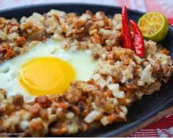

Sisig

Description
Sisig is a popular appetizer (pulutan) turned main dish that originated from the culinary capital of the Philippines : Pampanga. This dish was invented by Lucia Cunanan or popularly know as Aling Lucing (she is also known as the sisig queen). Originally, sisig is composed of chopped pigs face (snout included) and ears with a generous amounts of chicken liver. Hundreds of sisig variations are available today ranging from the original pigs face (maskara) ingredient to a more healthy seafood concoction such as squid, tuna, milk fish (bangus), and mussels.
Ingredients
- 2 lbs pig ears
- 1/4 lb pork belly
- 1 cup onion minced
- 3 tbsp soy sauce
- 1 tsp ground black pepper
- 1 knob ginger minced
- 3 tbsp chili
- 1 piece lemon or 3 to 5 pieces calamansi
- 1/2 cup butter or margarine
- 1.4 lb chicken live
- 34 ounces water
- 3 tbsp mayonnaise
- 1 tsp salt
Steps
- Pour the water in a pan and bring to a boil
- Add salt and pepper
- Put-in the pig’s ears and pork belly then simmer for 40 minutes to 1 hour (or until tender).
- Remove the boiled ingredients from the pot then drain excess water
- Grill the boiled pig ears and pork belly until done
- Chop the pig ears and pork belly into fine pieces
- In a pan, melt the butter then add the onions. Cook until onions are soft.
- Put-in the ginger and cook for a few minutes
- Add the chicken liver and cook until well done.
- Crush the chicken liver while being cooked in the pan
- Add the chopped pig ears and pork belly then cook for 10 minutes
- Put-in the soy sauce and chili then mix well
- Add salt and pepper to taste
- Put-in the mayonnaise and mix with the other ingredients
- Serve hot. Share and Enjoy (add the lemon or calamansi before eating)